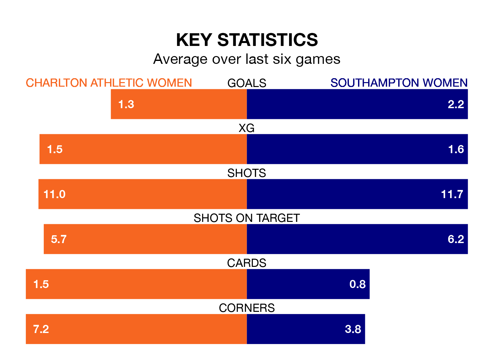

Two of the FA Women's Championship's top sides face each other at the Oakwood in Sunday's early kick-off, when second-placed Charlton Athletic Women host fourth-placed Southampton Women.
Charlton Athletic have picked up 12 wins and six draws from 21 games so far this season, and sit three points above the visitors going into the 2pm match.
The Saints, meanwhile, have won 13, picking up 39 points.
With 39 goals in 21 games so far this season, Southampton are the league's second-highest scorers with 1.9 goals per game. And they are conceding fewer than average, letting in 23 goals at a rate of 1.1 per game.
Charlton Athletic, meanwhile, are average scorers, with 1.4 goals per game. They have conceded 0.8 goals per game.
In Sophia Pharoah and Katie Wilkinson, the Saints have two of the league's most on-form strikers so far this season. They have notched eight goals each, to sit fourth in the scoring charts.
The hosts' top scorer, with seven goals in 20 games, is Kayleigh Green.
Charlton Athletic are in reasonable form in the FA Women's Championship, with four wins and two losses from their last six games.
And also with four wins and two losses over that period, the away side's form is identical – they have both taken 12 points from 18.
In the last three years, Charlton Athletic and Southampton have played each other on three occasions. Charlton Athletic won all of them.
Their last meeting was on November 12, when Charlton Athletic won 2-0 away.
Charlton Athletic's last match was on April 21, a 1-0 win against Sunderland Women, with Green getting the goal for Charlton Athletic.
Southampton beat London City Lionesses 3-1 last time out, also on April 21, with Emma Thompson, Molly Pike and Rianna Dean on the scoresheet.
Updated: 07:59 (UTC), 26/04/24